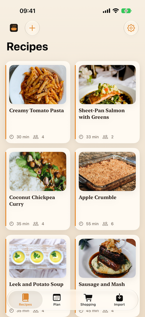
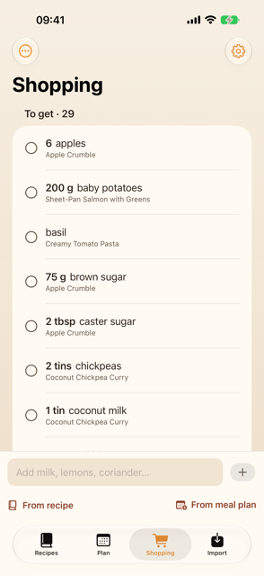
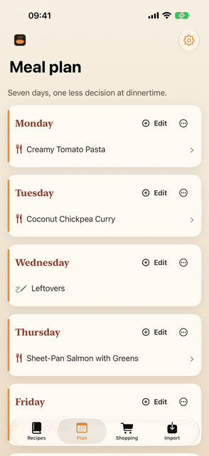

Every recipe, on your own device
You have recipes in six places: a bookmark, a screenshot, a note, an email, someone else's app, a link you sent your assistant. YumYums collects them into one library on your iPhone, and keeps them there.
One payment. No subscription, no account, no server. And the only recipe app your assistant can put recipes into: give it one page and say "install the yumyums skill".



Getting recipes in
From a link
Paste one address or a batch of them. Most recipe sites publish their recipe in a form YumYums reads exactly, so the ingredients arrive as ingredients rather than as a wall of text. The photo is downloaded once and kept, so the recipe still looks right years later when the site has been redesigned or taken down.
From anywhere with a share button
Safari, Instagram, TikTok, Notes, Mail. Share into YumYums and it is waiting on the Import tab next time you open the app. Share the same thing twice and you get one recipe, not two.
From your AI assistant
Send your assistant a recipe link and say "add this to my app". The recipe arrives on your phone as one small file; tap it and it opens in YumYums on the review screen, ingredients, method and photo filled in, ready to check and save. The tool that builds the file is free and open, works with any assistant that can run a command (Claude Code, Codex, OpenClaw and their like), and the file format is written down so an assistant that cannot run commands can still produce one. See for agents below.
From a screenshot, a note, or a page that publishes nothing
Some of the best recipes are a screenshot of somebody's story, or a paragraph in an email. YumYums reads those with Apple's on-device model: the words come off the picture on the phone, and the recipe comes out of the words on the phone. Nothing is uploaded and nothing is sent to anyone's API.
Anything read this way is tagged AI read, so you know which ones deserve a glance before you shop from them. It is honest about being a machine reading a picture.
From another app
Point YumYums at a Paprika export and the whole collection comes over, photos included. A text document with a dozen recipes in it gets split up and read one at a time. A pile of recipe screenshots out of your photos does too. Nothing joins the library until you have looked at it, which matters most when there are two hundred of them.
And one back out, to somebody else
Share a recipe and it leaves as one small file, through Messages, WhatsApp or mail. Whoever you send it to opens it in their own YumYums, reads it over and keeps it, photograph and all. One recipe per file, no accounts anywhere in it, and nothing that goes on changing on their phone after you have sent it.
And then cooking from them
Cook Mode gives you one step at a time in large type and stops the screen going dark halfway through folding something in.
The meal plan is seven days and nothing more complicated. Fill the week, then turn it into a shopping list in one tap.
The shopping list is written for a supermarket rather than for a recipe. "3 garlic cloves" from one recipe and "2 cloves garlic, crushed" from another end up on the same line, and every line remembers which recipes asked for it. Send the whole thing to Reminders when you want it on your watch.
For agents, and the people who run them
A YumYums recipe is a .yumyums file: a zip with a manifest,
the recipe as JSON, and an optional photo. The app opens it from
Messages, Mail, Files or Safari. That makes the app a place any assistant
can put a recipe, with nothing to sign up for and no service in the
middle.
Setting it up is one sentence. Give your assistant the page below and say "install the yumyums skill". It installs the skill for itself, asks you once how to reach your phone, and from then on "add this recipe to my app" does what it says. It works from Claude Code, Codex, OpenClaw or a plain terminal, and the same page documents the file format for anything that would rather write the file itself.
The app contains no assistant and sends nothing to one. Your assistant is yours; YumYums just opens what it makes.
Questions worth answering before you buy
- Does the AI part work on my phone?
- Only on a device that supports Apple Intelligence, with it switched on and the model downloaded. YumYums checks by actually running the model rather than trusting a flag, and tells you which of those three things is missing. Everything else in the app, including importing from links and moving a collection over from Paprika, works on any supported device. If you are buying it only for the AI import, check your device first.
- Can my AI assistant add recipes for me?
- Yes. Any assistant that can run a command can use the free yumyums-skill to turn a link or pasted text into a recipe file and send it to your phone; you tap the file and check the recipe before it is saved, the same review screen every import gets. An assistant that cannot run commands can still write the file, because the format is documented. The app never talks to the assistant and never sends your recipes anywhere.
- Does it sync between my phone and my iPad?
- Yes, if you switch it on. Sync is off when you install the app and there is a switch for it in Settings. With it on, your recipes, meal plan and shopping list are kept in your own iCloud account, so both devices show the same collection; with it off, YumYums does not connect to iCloud at all. Either way there is no account to make with us and no server of ours in the middle: it is your iCloud, your storage, and nobody else can see it. It is also the newest part of the app, so if you are buying it for that in particular, it is the thing to try first.
- Is there an iPad version?
- Yes, and it is a tablet layout rather than a phone one made wide: a sidebar, large recipe cards, ingredients beside the method, and a full-height panel on the shopping list. One purchase covers both.
- What happens to my recipes if you disappear?
- Nothing. There is no server to switch off. The recipes are files in the app's own storage on your device, and they are included in your iPhone backup like everything else. If you turned sync on there is a second copy in your own iCloud, which is yours too. Settings can also write the whole collection out as an ordinary zip file, photographs included, which anything can open.
- Does it convert grams to ounces?
- No. It keeps whatever units the recipe used, and the AI import is specifically instructed never to convert anything, because a model that does arithmetic on your ingredients is a model that can get your ingredients wrong.
- How accurate is the AI import?
- On the test set it was built against, over 90% of ingredient lines and method steps came out right. That set was thirty pages from four publishers, which is enough to build against and not enough to promise on. Treat an AI read recipe as a good first draft, which is why they are tagged.
- What does it send anywhere?
- The page you asked it to fetch, and the photo on that page. That is the whole list. See the privacy page.